Check the flow:
Git workflow with GitFlow
Carmine De Rosa
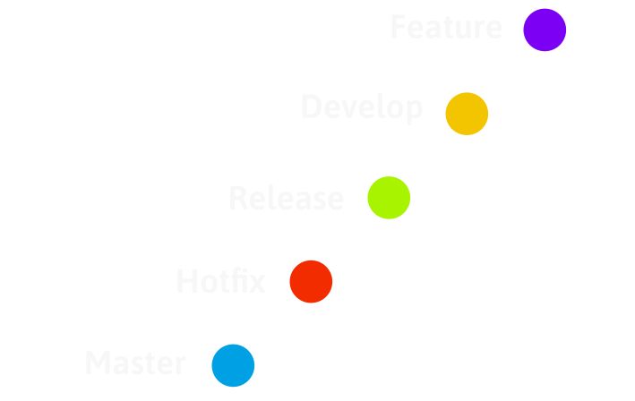
Why Git?
Prima di iniziare a parlare di Git, ed in particolar modo di GitFlow, è bene fare una panoramica dei sistemi di controllo del codice sorgente più usati...
1 minuto di silenzio
Se credete che questo sia un metodo efficace o anche solo "sufficiente" a garantire un adeguato controllo del codice, cambiate lavoro!
Prima di Git
Prima che Git facesse la sua comparsa (per mano di Linux Torvalds), i sistemi di versioning più diffusi erano CVS, SVN, etc... molti di questi sistemi utilizzavano un modello centralizzato e rendevano lo sviluppo collaborativo un vero incubo.
Modello centralizzato
Il modello centralizzato prevede un unico repository ed un sistema di lock, cosicchè uno sviluppatore per volta ha diritto di accesso in scrittura alla copia di quel file contenuta nel repository centrale.
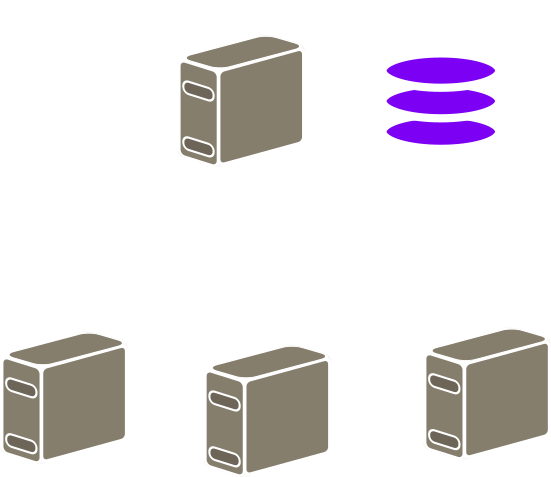
Modello distribuito
Nei modelli distribuiti ogni sviluppatore ha un proprio repository locale, cosicchè da poter operare anche senza avere una connessione...
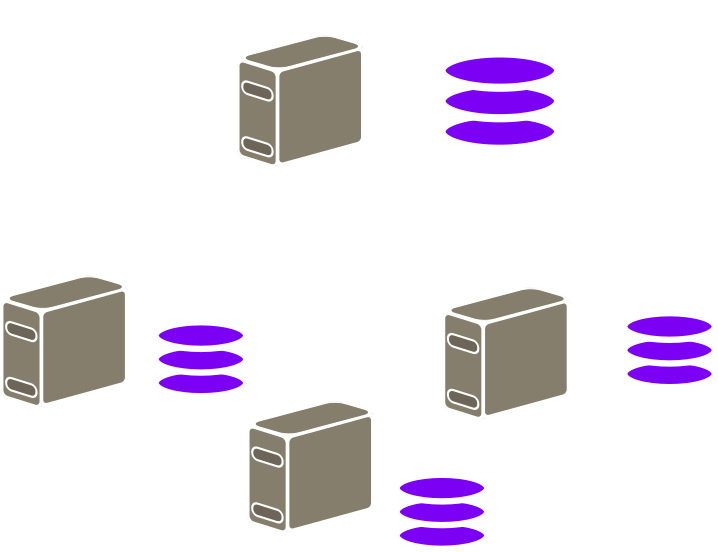
SVN vs GIT
|
SVN |
Git |
| Controllo di versione |
Centrale |
Distribuito |
| Repository |
Repository centrale in cui vengono create le copie di lavoro |
Copie locali del repository su cui poter lavorare |
| Permesso di accesso |
Basato sul percorso |
Per tutta la directory |
| Visualizzazione delle modifiche |
Registra i file |
Registra i contenuti |
| Cronologia delle modifiche |
Completa solo nel repository, le copie di lavoro contengono solo la versione più recente |
Repository e copie di lavoro contengono la cronologia completa |
| Connessione di rete |
Ad ogni accesso |
Necessaria solo per la sincronizzazione |
Git classic workflow
Il sistema di versioning di Git si divide in rami o branches, il workflow classico di Git prevede N branches, il primo è il Master e gli altri sono di Develop
Il primo branch (Master) è sostanzialmente deputato ai rilasci, mentre i branches di Develop vengono utilizzati per lo sviluppo.
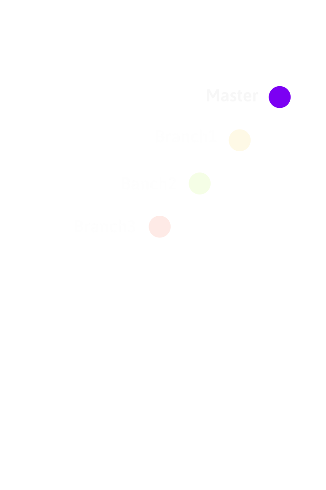
Init
Prima di tutto creiamo ed inizzializziamo la nostra repo, per fare ciò sufficiente creare una directory e lanciare:
$ git init
L'operazione creerà una directory nascosta .git contenente la configurazione della repo.
La repo è composta da tre "alberi" mantenuti da Git. Il primo è la Directory di lavoro che contiene i files attuali. Il secondo è l'Index che fa da spazio di transito per i files e per finire l'HEAD che punta all'ultimo commit fatto.
Clone
Se invece partiamo da da una repo già esistente, possiamo clonarla con il comando:
$ git clone /path/to/repository
ES:
$ git clone https://github.com/dslak/GitFlow.git
Pull
Ogni volta che un utente inizia a lavorare su una nuova feature fa il pull, ovvero fa il fetch&merge delle modifiche presenti sul server remoto sulla propria repo locale, in modo da allinearsi.
Ad ogni modifica effettua un commit in modo da tenere traccia delle modifiche passo passo.
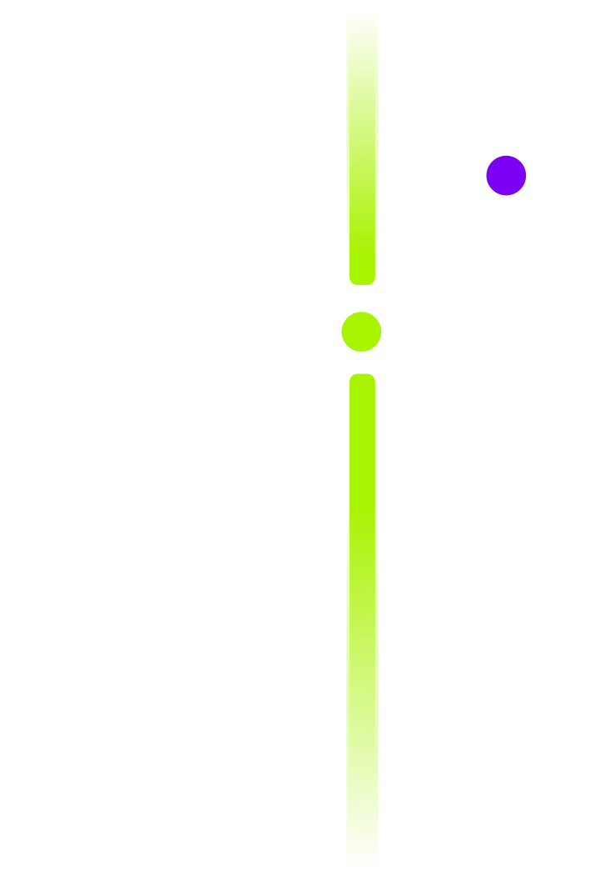
Commit
Ad ogni modifica effettuata è bene fare un commit in modo da tenere traccia delle modifiche passo passo.
NB: i commit sono gratis!
$ git commit -m 'modificata area utente'
$ git commit -m 'aggiunto controllo'
È buona prassi specificare un messaggio di commit esplicativo, "fix" non lo è!
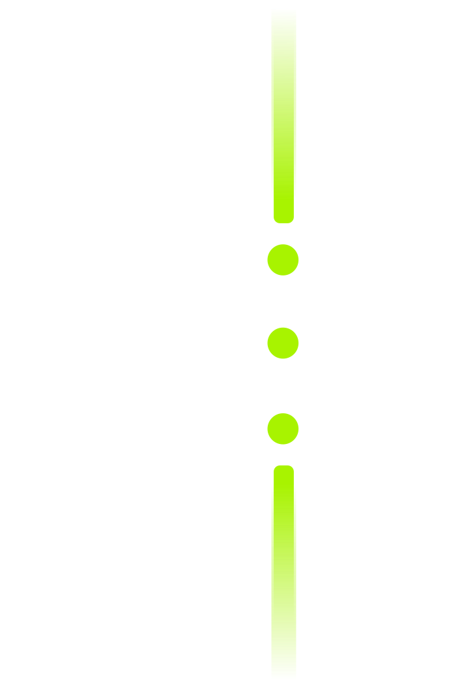
Push
Una volta completato lo sviluppo di una feature si procede con l'invio delle modifiche locali al branch (in questo caso master) sulla repo principale in modo da renderla disponibile agli altri sviluppatori.
$ git push origin master
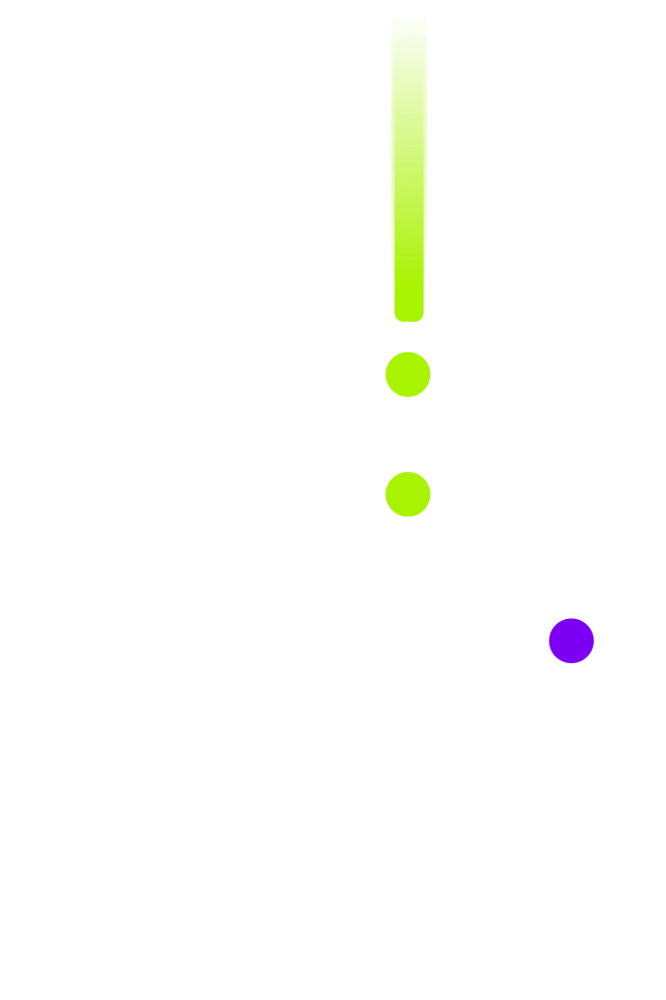
Merge
Nel caso in cui si abbia bisogno di modifiche presenti su un altro branch, è possibile effettuare il merge di due branch.
$ git push merge branch
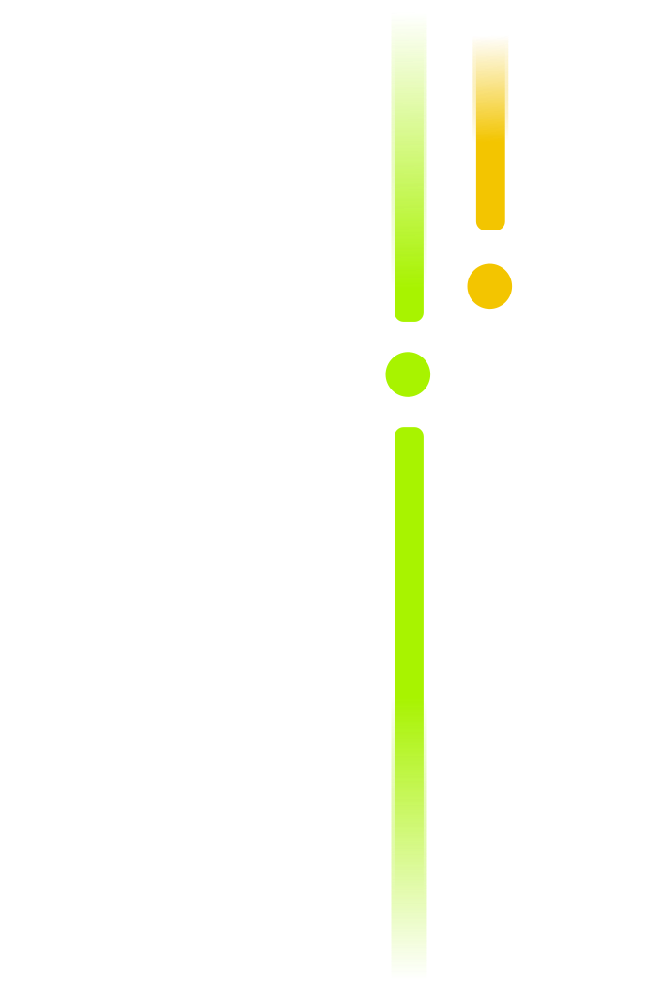
Diff
Git tenterà di incorporare automaticamente le modifiche, se ciò non è possibile, Git, ci segnalerà che sono presenti dei conflitti, e che quindi bisogna risolverli manualmente.
Una volta fattto ciò si potranno visualizzare le differenze prima di effettuare il merge digitando
$ git diff branch_sorgente branch_target
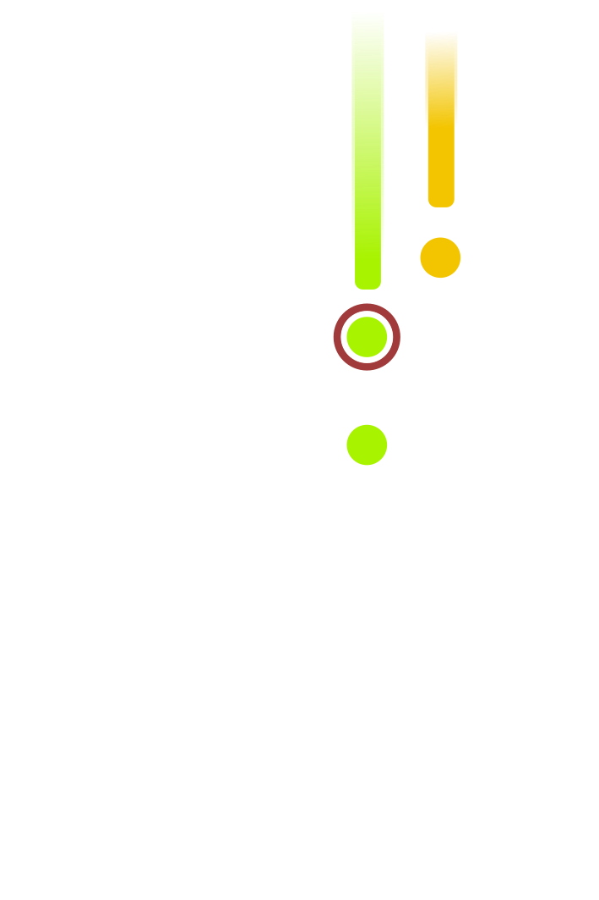
Altri comandi
$ git add nomedelfile // Agginge un file all'INDEX
$ git remote add origin server // Connette la repo locale al server remoto
$ git checkout -b feature_x // Crea un nuovo branch e passa ad esso
$ git checkout feature_x // Passa ad un branch esistente
$ git checkout -d feature_x // Cancella un branch
$ git tag 1.0.0 commitID // Crea un tag, utile per il rilascio
$ git log feature_x // Restituisce il commitID
GitFlow
Negli anni si è sfruttata la versatilità di Git per creare workflow sempre più efficienti, un esempio è GitFlow.
GitFlow si basa essenzialmente su 5 branches:
Master, Hotfix, Release, Develop e Feature.
GitFlow branches
| Master | è il ramo principale, contiene il codice in produzione. |
| Hotfix | utilizzato per fix veloci sul codice in produzione. |
| Release | utilizzato per i rilasci. |
| Develop | è il ramo principale di sviluppo. |
| Feature | contiene tutte le feature. |
Master
Master è utilizzato quasi esclusivamente dai reviewer, quando una fase di sviluppo è completa i reviewer effettuano un merge di Develop su Master, in modo rendere il codice disponibile in produzione.
L'unico caso in cui un utente può fare una pull-req su Master è in caso di Hotfix
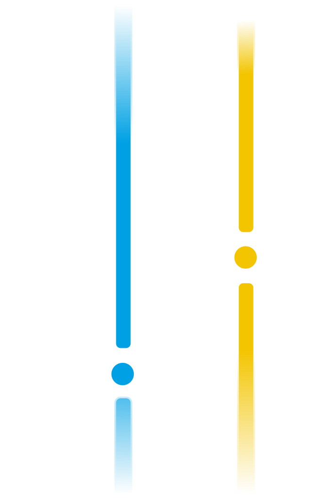
Hotfix
Questo branch viene utilizzato solo in casi eccezionali, ovvero quando si rende necessaria una modifica veloce al codice in produzione.
Le modifiche vengono pushate su Master e successivamente da Master a Develop, in modo da renderle disponibili a tutto gli sviluppatori.
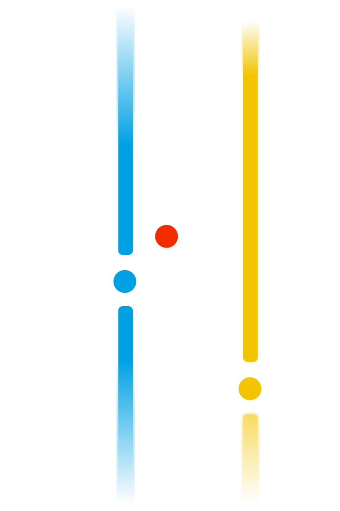
Release
Questo branch contiene solo ed esclusivamente i rilasci, ovvero il software così come viene prelevato dall'utente finale.
Solitamente è accompagnato da un tag che ne indica la versione.
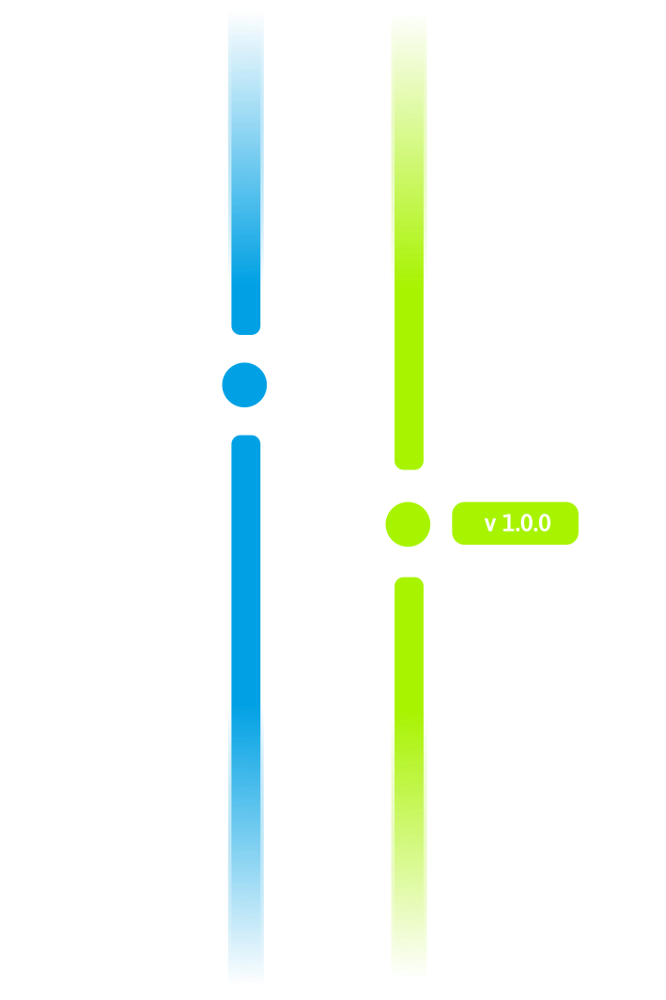
Develop
È il vero e proprio ramo di sviluppo, il punto di partenza di ogni fase di sviluppo.
Prima di iniziare una fase di sviluppo è bene fare il pull di Develop, in modo da essere sicuri che il codice sul quale si sta lavorando sia allineato all'ultima versione.
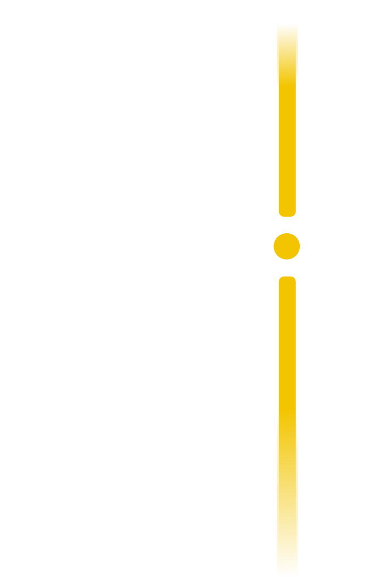
Develop e Feature
La differenza principale tra il workflow classico e GitFlow sta nell' utilizzo di un numero fisso di branches e l'interazione tra Develop e Feature.
Il concetto stesso di Feature rende il disegno apparentemente più complesso, ma allo stesso tempo garantisce un controllo maggiore.
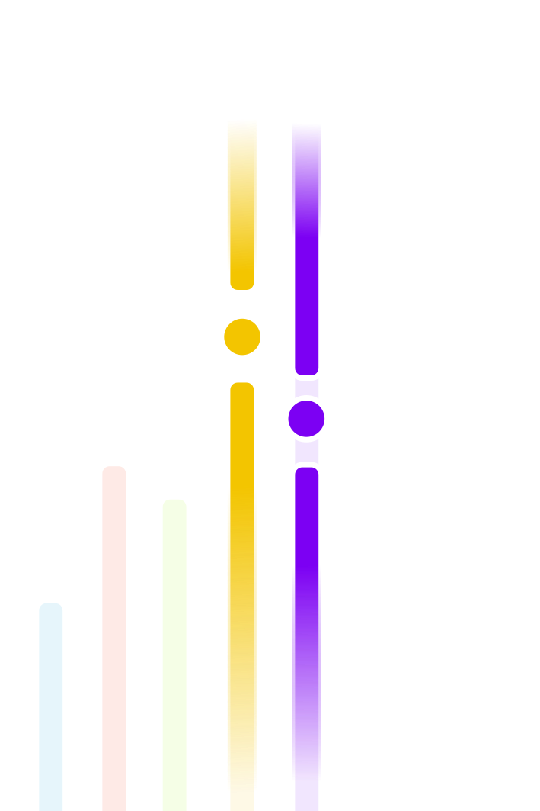
Feature
La particolarità del branch Feature, è che esso è diviso in diversi sotto-branches, le features appunto.
Questo permette al team di sviluppo di avere un controllo più capillare sul flusso di lavoro e velocizzare la risoluzione dei conflitti.
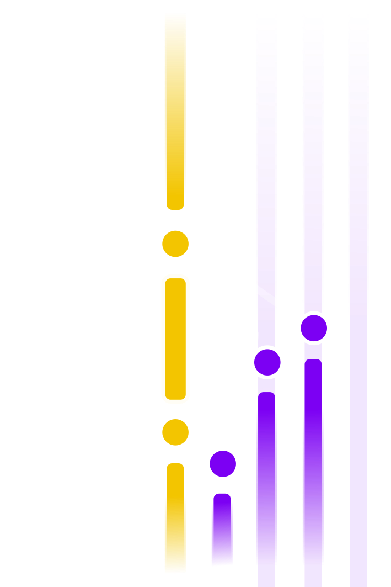
Feature
Una volta completato il lavoro sulla feature viene fatto il push ed effettuata una pull-req su Develop.
NB: nell'effettuare la pull-req è possibile richiedere o meno la chiusura della feature
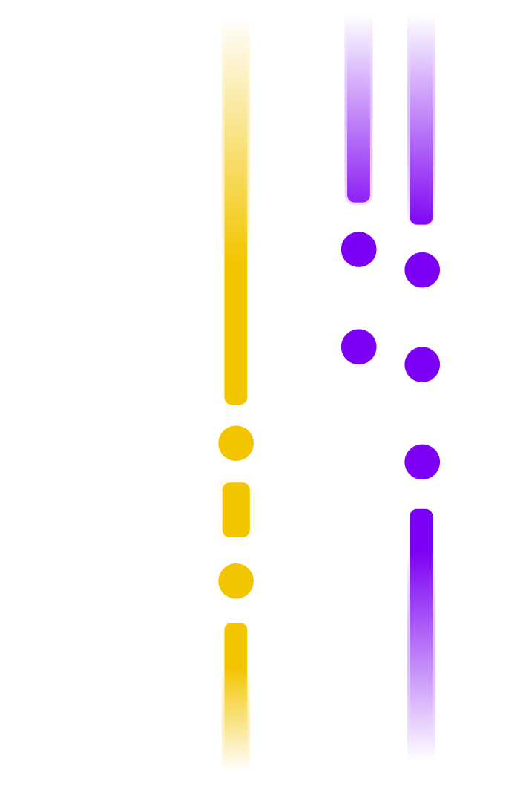
Feature by Feature
Se il lavoro che abbiamo appena effettuato su una feature è stato pushato ma non ancora mergiato su Develop, ed abbiamo bisogno di quelle modifiche per la creazione di una nuova feature, è sempre possibile partire dalla propria feature.
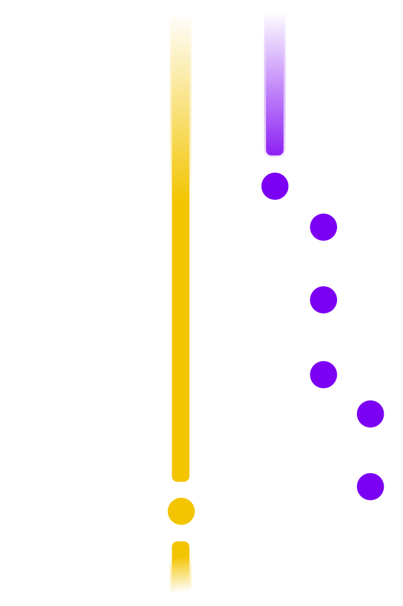
Merge di Feature
Può capitare di aver bisogno di una modifica (pushata ma non ancora mergiata su Develop) effettuata da un altro utente, in questo caso è possibile fare il merge tra features.
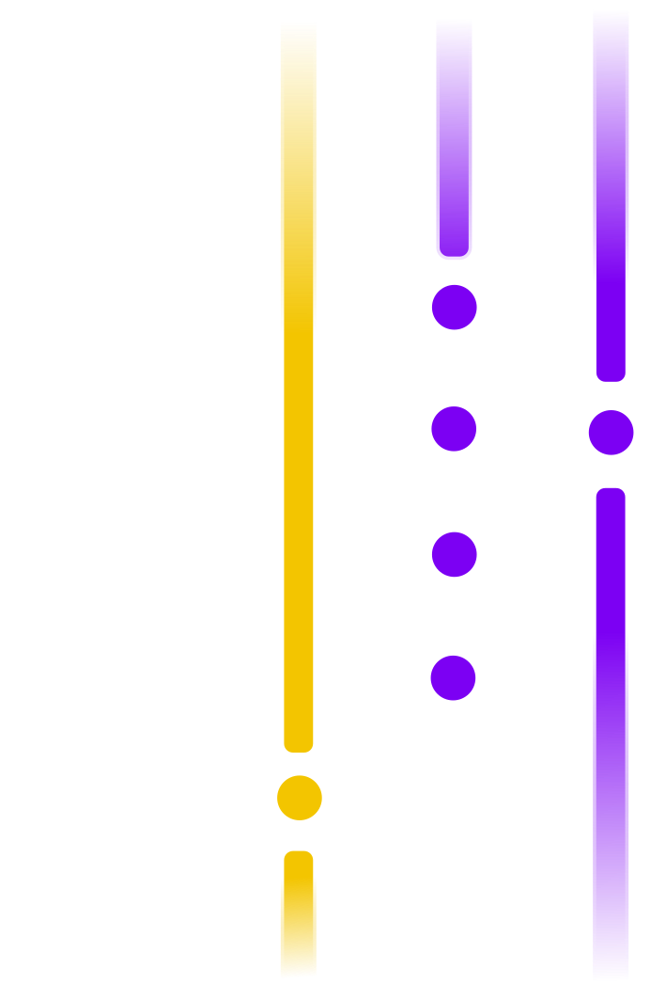
Stash
Se abbiamo fatto il checkout su una feature ma dobbiamo passare ad un altra feature, possiamo congelare le modifiche facendo uno stash.
Tutte le modifiche potranno essere eliminate oppure applicate alla stessa o ad un altra feature in un secondo momento.
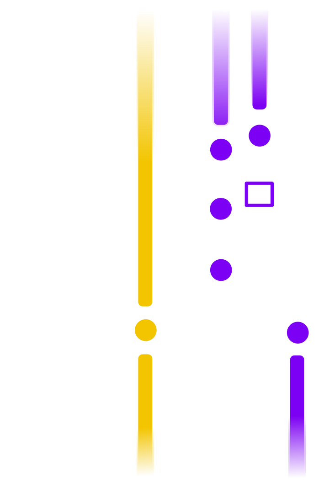
Rebase
Può capitare di dover lavorare su una feature esistente dopo aver lavorato su altre feature, se facciamo il checkout sulla feature in questione torniamo indietro nella history e perdiamo le modifiche successive.
Effettuando il rebase creiamo un avanzamento delle history fino al commit corrente.
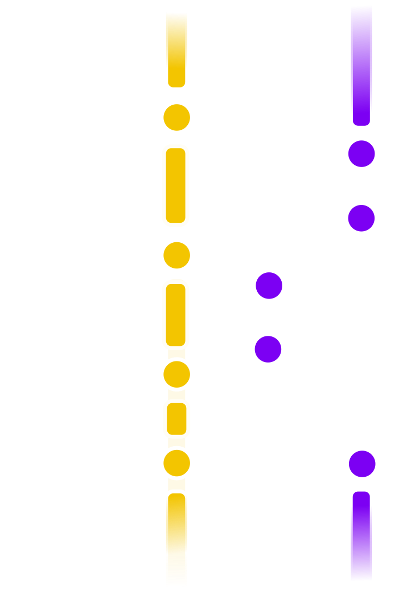
Installazione
Installare GitFlow è semplice, basta seguire le istruzioni sulla repo del progetto: https://github.com/nvie
$ curl -OL https://raw.github.com/nvie/gitflow/develop/contrib/gitflow-installer.sh
$ chmod +x gitflow-installer.sh
$ sudo ./gitflow-installer.sh
GUI
Data la complessità del modello è consigliabile utilizzare un software con una interfaccia grafica che faciliti le operazioni.
Esistono diversi software che supportano GitFlow, uno dei migliori (IMHO) è GitKraken :)
https://www.gitkraken.com/
Riferimenti
| Git | https://git-scm.com |
| GitHub | https://www.github.com |
| GitKraken | https://www.gitkraken.com |
| GitFlow guide | https://www.atlassian.com/git/tutorials/comparing-workflows#gitflow-workflow |
| GitFlow | https://github.com/nvie/gitflow |